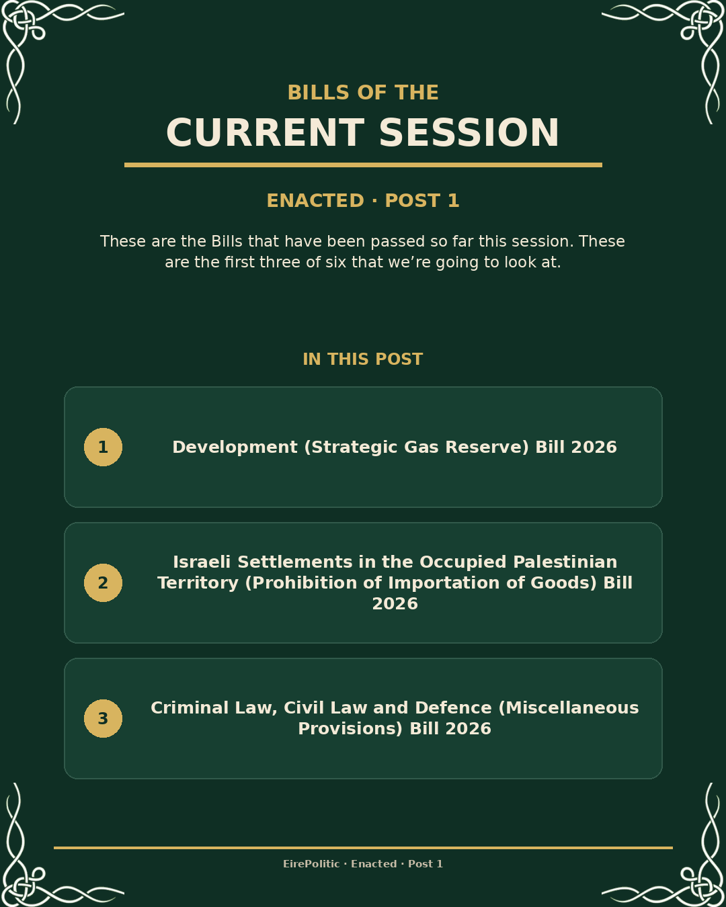
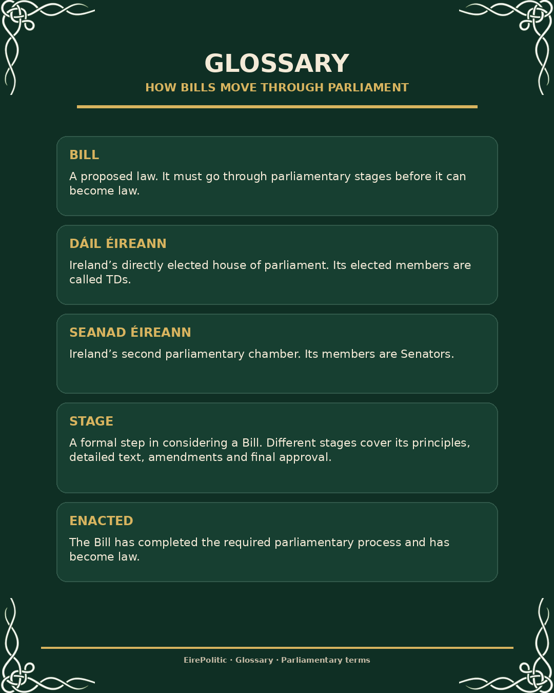
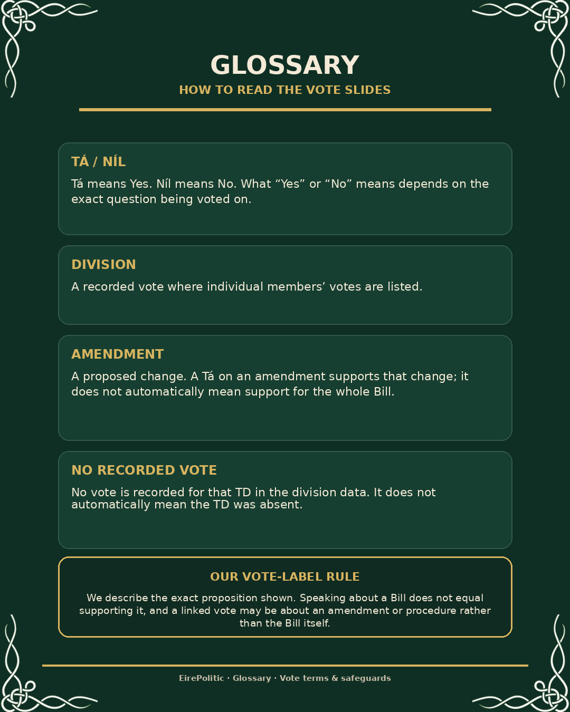

Bills of the Current Session · Enacted · Post 1
Title-slide revision with centered Bill boxes, shown alongside the approved Gas Reserve pair and unchanged glossary slides.
Title

Approved explainer
Approved vote
Glossary: parliamentary terms

Glossary: vote terms & safeguards
